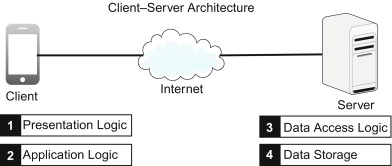

This project was very cool because it taught me a lot about how data bases
and structures are set up when it comes to data allocation. I was tasked with
implementing a buddy-system memory manager that allocated memory in blocks
with sizes that are power-of-two multiples of a basic block size.
This helped me gain an understanding of how systems handle memory and memory
management so that a system does not become too bogged down while also knowing
what to do with free memory space. If you want to look into more of my finish
project you can find it at the link listed below.
A Client Process Speaks to a Server Process

With this project I was assigned to write a client program that connected to a given
server. The server I made defined a communication protocol, which I then implemented
in the client to send a properly forumlated message over a communication pipe. These
pipes were called FIFO and used a "First in First Out" methodology of moving data from
the client side to the server side.
This project let me into the world of client server processes and really showed me
the bare bones of how password and usernames are used over client server processes.
My own UNIX/Linux Shell
This project is pretty self explanatory! It was a lot of fun but also caused me
a lot of issues. This project in particular was very interesting considering
I am so used to using Linux shells that are already fully implemented with things
such as git bash. Now using the shell is very nice and easy to use while being
very intuitive.
The biggest difference and a saying I have heard many times before, it may be fun to
play games, but it might not be the most fun to develop them. I think that is applicable
to this situtaion because it was really tricky to get the entire shell working and
getting the commands to work. This project really pushed me out of my comfort zone and
I think it was an awesome learning opportunity.
The Server Moved Out
So this project is a massive expansion on the project that I just listed above. With
this project I took my server client process and expanded on it using a TCPRequestChannel
in order to provide communication across the network over TCP/IP. This project also has
features of multithreading in it that I did in a later project, this is essentially the final
project of the clien / server process.
This Project really showed me a lot of different views on client and server approaches
and all of the different communication features that go into getting data across the internet.
I would really like to expand on this project and get more into newtwork building and hopefully
lead into broadband work or working on things such as 5G networks. This project really peaked
my interest and I hope to do more like these in the long run.
Some Other Work that I want to do!
Game Development
So this portion of the portfolio is some things that I really want to start working on.
I really liked playing video games growing up and I constantly find myself playing all different
types of genres and finding development similarities between all genres. I find it really
interesting that I can pick up on design choices and decision making because of the many different
types of games that I have played and all the hours I have logged over the years.
I really want to work in the unity or unreal engines as they are extremely powerful
and they have produced some really great games in the past few years.
I also love the aspect of working on a team to make bring a lot of small pieces and
features together in order to make one giant product!
Just about every aspect of game development interests me. I have a very artistic and creative
side that I want to explore and get more work on such as 3D modeling and creating different
levels and level design. It's something that I really want to get into but I am having a hard time
finding the right place to start. But nonetheless, I want to find anything that I can dive into to
bring this dream of mine to life.